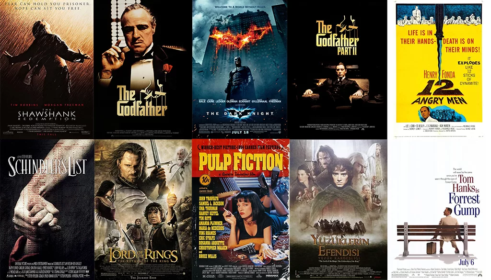
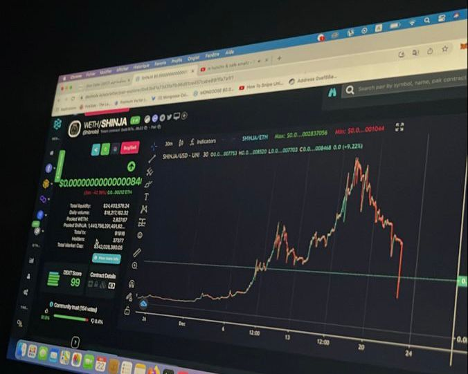
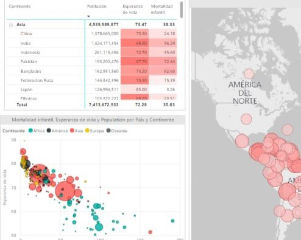
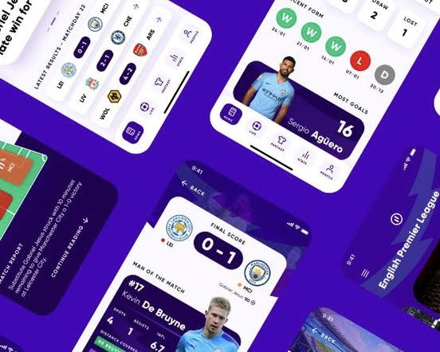

Utilizando SQL,nuestro análisis se sumerge en las mejores películas de IMDb, explorando factores como ingresos, calificaciones, géneros, años de estreno, países e idiomas. A través de consultas personalizadas, desentrañamos tendencias, las películas más rentables, géneros populares e insights sobre la distribución de películas a lo largo del tiempo y en diferentes regiones, ofreciendo una perspectiva integral sobre las características destacadas de estas aclamadas películas.


Análisis de Portafolio Financiero: Utilizando Python para evaluar métricas de riesgo en el portafolio, como el Valor en Riesgo (VaR) y el Valor en Riesgo Condicional (CVaR), además de evaluar el rendimiento del portafolio basado en datos históricos de acciones. El proyecto tiene como objetivo proporcionar perspectivas sobre la gestión de riesgos y la evaluación del rendimiento dentro de los portafolios de inversión

Análisis Demográfico Global: Mediante la creación de dashboards interactivos en Power BI, en este proyecto se presenta una exploración detallada de datos demográficos a nivel mundial. Las visualizaciones dinámicas incluyen información sobre la esperanza de vida, datos poblacionales, estadísticas de mortalidad y la distribución demográfica por países al rededor del mundo.

Este proyecto se centró en el desarrollo de un sistema de predicción de resultados de partidos de la Premier League utilizando técnicas de Machine Learning. Se utilizaron conjuntos de datos históricos que incluían información detallada sobre equipos participantes, resultados de partidos, fechas y estadísticas relevantes de cada partido.
El proyecto de "Análisis de Ventas y Tendencias del Mercado de Vehículos" ofrece una visión integral de las transacciones de ventas de diversos vehículos, proporcionando valiosa información para entender el comportamiento del mercado automotriz, permitiendo a los interesados tomar decisiones informadas sobre estrategias de ventas, inventario y marketing.